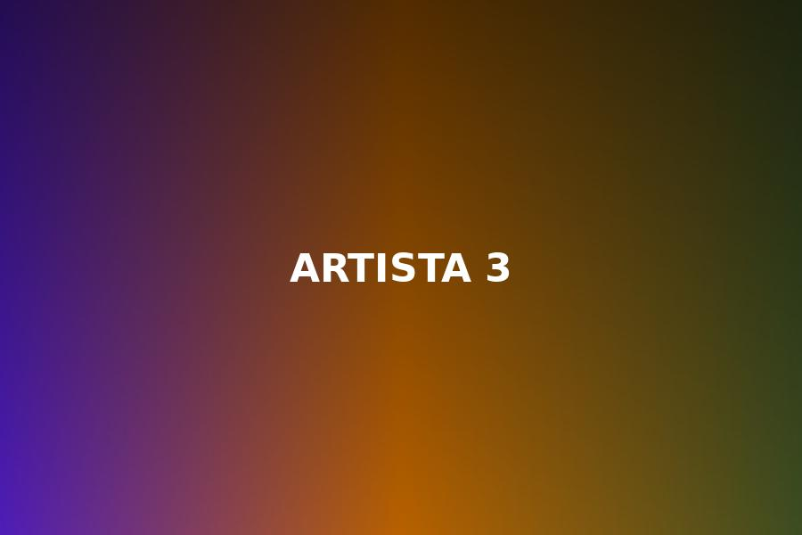
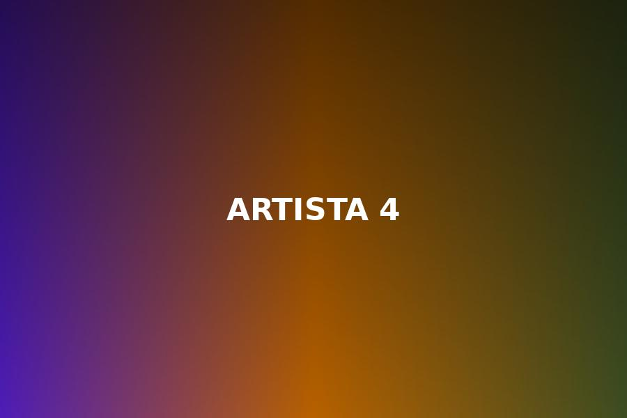

Conversaciones exclusivas, momentos únicos y el lado más humano de quienes hacen historia en el entretenimiento.
Las historias que muestran el lado más personal de tus artistas favoritos.
Una dinámica divertida para conocerlos fuera del escenario.

Los momentos que no viste durante la entrevista.

Las respuestas, risas y clips que se vuelven tendencia.